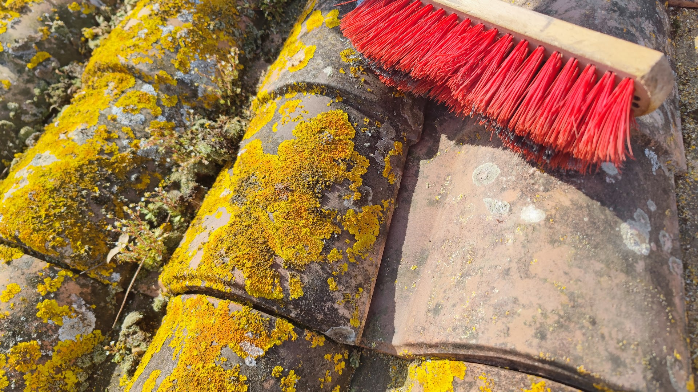
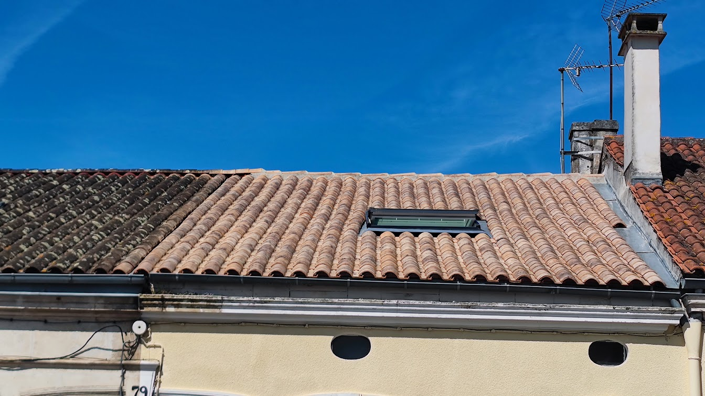
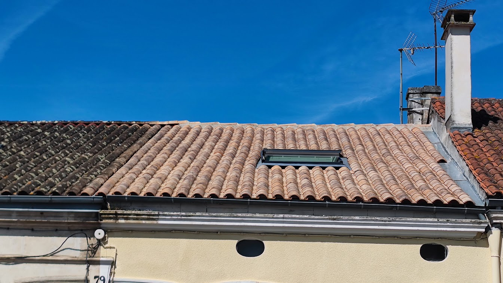
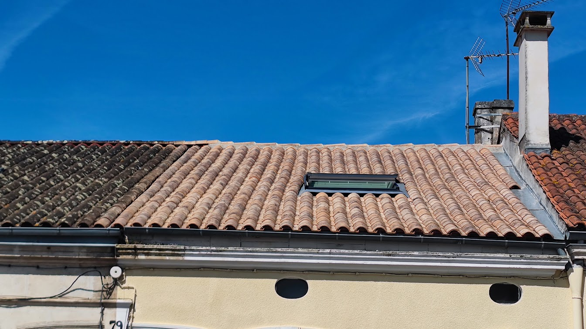
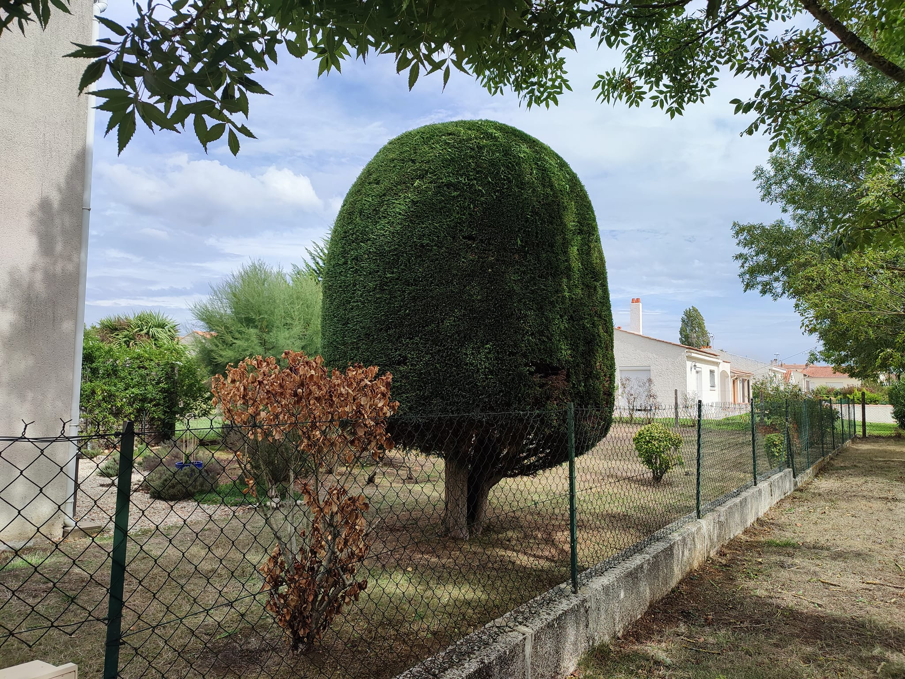
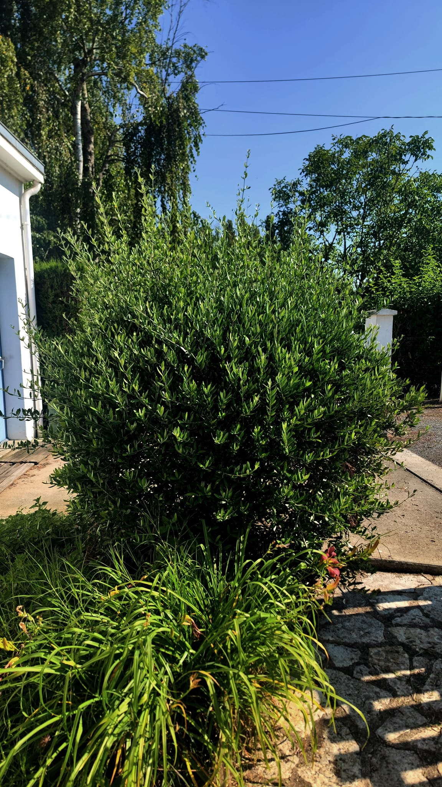
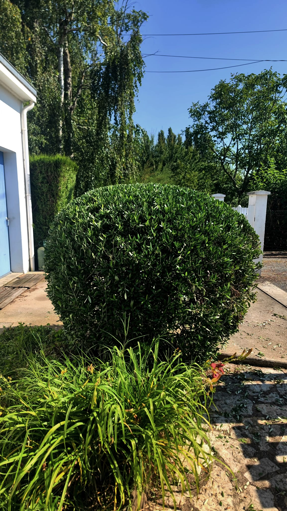

Nettoyage de toiture, entretien d'espaces verts, Rochefort
Basé à Rochefort (17), j'interviens auprès des particuliers et professionnels pour l’entretien des toitures et des extérieurs. Artisan indépendant depuis plus de 10 ans.
- Devis gratuit
- Intervention sur rendez-vous
- Zone : Rochefort et environs
Prestations
- Nettoyage et démoussage de toiture
- Entretien des espaces verts

 





Ce que mes clients disent
« Professionnel fiable, travail impeccable. »
« Intervention rapide et efficace. Je recommande. »
Note Google : 5/5 – avis disponibles sur ma fiche
Contact
📞 06 XX XX XX XX
📧 ced.atoutfaire@tonadresse.fr
📍 Rochefort (17300)
Utilisez le formulaire intégré Wix pour vos demandes de devis